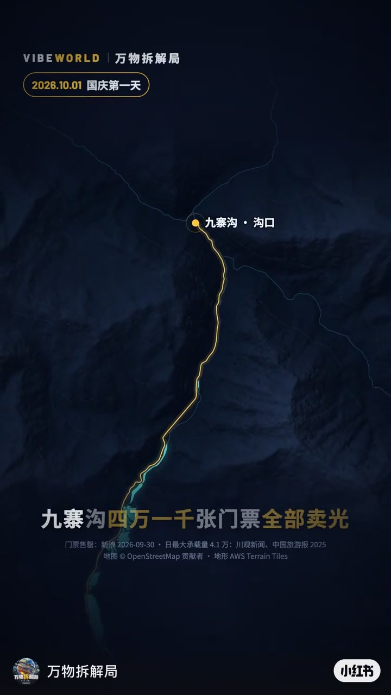
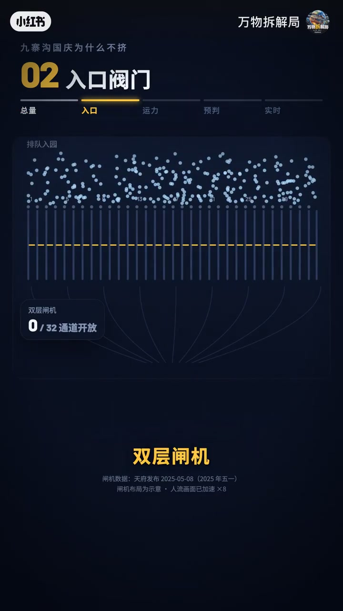
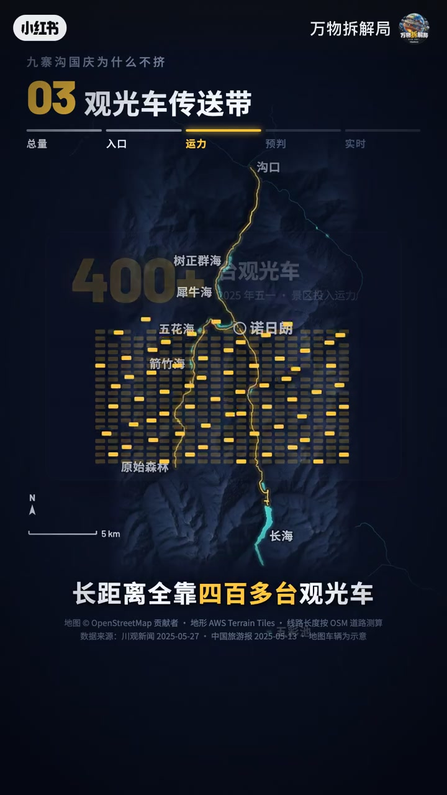
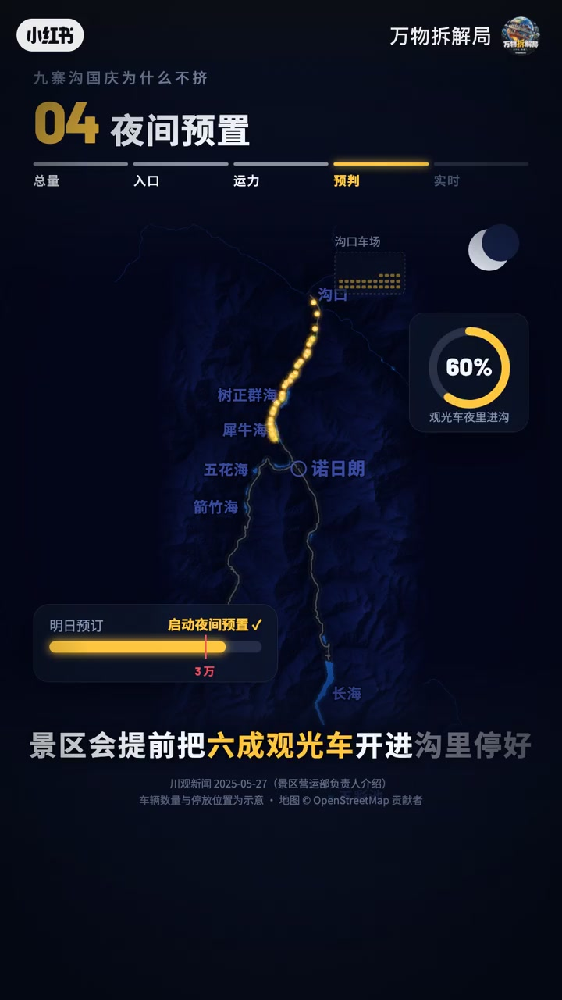
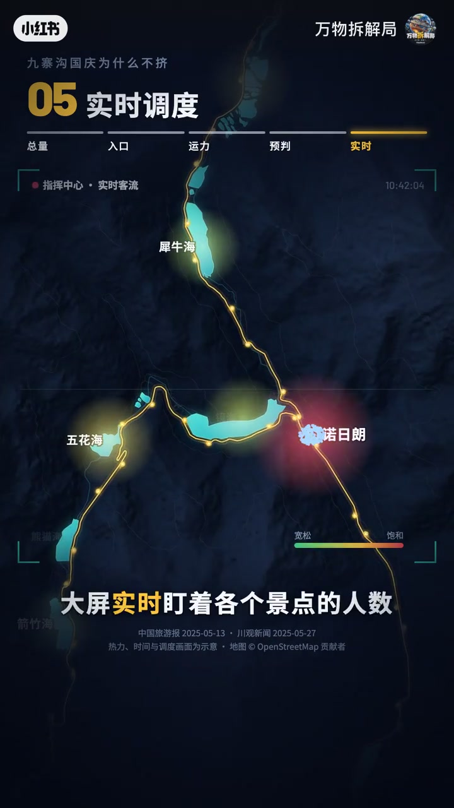

内容要点
「万物拆解局」把九寨沟不堵拆成五道阀门：总量预约、大门闸机、沟内人车分流与观光车循环、夜间预置运力、指挥中心实时分流。类比海华堤坝拦水——不是人少了，是流被管住了。
知识结构
单日最多4.1万，卖完停售；退票不回公开池，按序分给40公里内候补。
32通道双层闸机，约3–5秒/人，峰值约1.9万/小时；下午2点后停入园；栈道+400多台观光车珍珠串循环。
订票超3万则夜预置六成车辆；大屏盯景点，满员改派并广播引流。
总量、入口、运力、预判、实时——五道阀门。
景区承载力靠「阀门分层」而不是靠劝人少来。
00:00-01:10预约上限、闸机与珍珠串班车
国庆首日4.1万张票售罄：门前先关上——实名预约、卖完即停；退票不回公开池，而按订单顺序分给景区周边40公里内候补者。第二道阀在大门：双层闸机32通道全开，每人3到5秒，一小时能放进约1.9万人；下午2点后停止入园。
第三道最关键：沟里人车分流，人走栈道看景，长距离靠400多台观光车。三沟合计几十公里，车像一串珍珠循环，两三分钟一班，游客像在传送带上选站下车。



01:10-01:53夜预置车辆与指挥中心分流
第四道阀在前一夜：若次日订票超3万，景区提前把六成观光车开进沟里停好，一早变成车等人。最后一道在指挥中心：大屏盯各景点人数，诺日朗瀑布将满就向邻近站点多派车，并用电子屏和广播把人引开。
收尾类比：九寨沟的海子被堤坝层层拦住；4万多人不堵，靠的也是一道道阀门——总量、入口、运力、预判、实时。


完整转录（36段）
以下文本由 Whisper medium 模型自动转录，可能存在少量识别误差，已尽可能修正。
国庆第一天,九寨沟四万一千张门票全部卖光
门之前就关上了,实名预约
一天最多四万一千人,卖完即停售
有人退票,票也不回公开池子
而是按下单顺序分给景区周边40公里内排候补的人
第二道阀门是大门,双层闸机
32个通道全开,每人通过只要3到5秒
一小时能放进19,000人
下午2点以后,停止入园
第三道阀门最关键
沟里人车分流,人走站道看景
长距离全靠400多台观光车
三条沟加起来几十公里
车像一串珍珠在上面循环
两三分钟就来一班
你想去哪?就像在传送带上挑一站下车
第四道阀门
在前一天夜里
如果第二天订票超过3万人
景区会提前把六成观光车开进沟里停好
第二天一早不再是人等车,而是车等人
最后一道阀门在指挥中心
大屏时时盯著各个景点的人数
诺日朗瀑布快满了
就往邻近站点多派车
同时用电子屏和广播把游客引向别处
九寨沟的许多孩子
是被一道道盖华堤坝层层拦住的水
4万多人不堵
靠的也是一道道阀门
总量、入口、运力、预判、实时
不是人少了,是流被管住了
下次去景区
不妨留意一下它的阀门
你还想知道哪里的调度秘密?
评论区告诉我